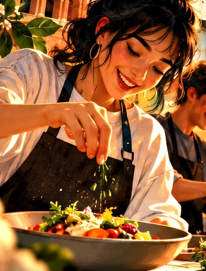
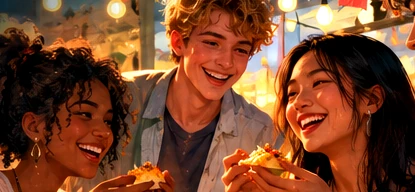
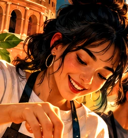
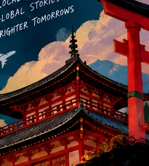
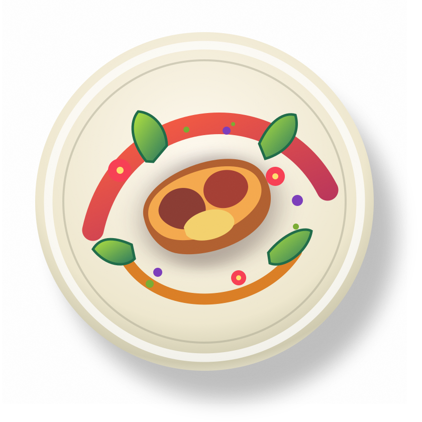
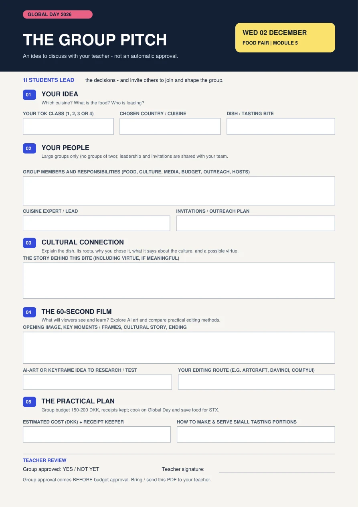

PREPARE & COOK IT ON GLOBAL DAY.
Have the dish ready and bring it to the food fair during the fifth module.
One small bite. A whole world of stories. Let's make our food fair something worth talking about.


A dish can carry a memory, a tradition, a story—or a reason for two people who have never met to talk.
Something authentic or meaningful to your group.
Give STX students an opportunity to try and ask.
Build friendships across programmes and year groups.
Form cooking groups with enough people to cover the jobs. Groups of two are not allowed.
Your teacher must approve the group before its budget can be approved. Do not treat the plan as approved automatically.
Plan a dish that fits a 150–200 kroner group budget. Check with your teacher before spending.
Keep the receipts for everything you purchase. Assign someone to manage spending and documentation.
Have the dish ready and bring it to the food fair during the fifth module.
Eat your own meal beforehand. Do not eat the food before the STX students arrive. Make sure there is enough for visitors to taste.
Introduce the food, its cultural background and its significance. You'll get the complete video brief shortly.
You choose which country or cuisine your group will represent. You do not have to be born there.
At least one group member must have solid knowledge of the cuisine and be able to lead on the dish, its preparation and its story.
1I students lead the decision-making. You choose the direction, build the plan, and invite students from your assigned classes to join your groups.
1I teams decide the cuisine, dish, roles and direction.
Approach students from your class's assigned year group. They can join your team.
Make room for new teammates' ideas, work and cultural knowledge.
This is more than publicity. You are the 1I leaders: make the key decisions, invite your assigned year-group students, and genuinely involve them as teammates.
IMPORTANT DISTINCTION: TOK 3 welcomes 2I English A · TOK 4 welcomes 2I English B. 1I leads; invited students participate.
As the 1I leaders, you decide together, then bring others into the team. Cooking, culture, video, invitations, budget and hosting all need people.
Recipe, preparation, cooking, tasting portions.
Dish expertise, accurate history, cultural meaning.
Script, film, edit, and deliver the one-minute video.
Welcome assigned students as teammates, not just an audience.
Costs, shopping list, receipts, and approval.
Set up the table and talk with visitors.
Suggested responsibilities, not fixed job titles. People can collaborate across roles. Your teacher approves group composition.
Make a one-minute video presenting the dish and the culture behind it. This is part of the group assignment—not an optional extra.

Give it a name. Show the food.
Explain its cultural roots, background or history.
Tell us why this food matters to the group.
Connect the food to traditions, values or ways of life.
Explore a meaningful link—wisdom, for example—and explain it rather than just naming it.

A chosen image or moment that helps define how a shot starts, changes or ends. Can you animate still images into a short sequence?
Respect cultural accuracy and people's permission. Don't upload classmates' images to AI tools without consent. Avoid spending money.
Investigate what works on your computer, what really costs nothing, and how to tell a story. Ask your teacher for help.
Try the creative-app suite: PhotoCraft for images; FilmCraft for video. Free, but early-stage and experimental.
EXPLORE THE APPS ↗Free desktop editor for filming, cutting, colour, titles and sound. A strong conventional route.
FREE EDITOR ↗Explore local AI-image/video workflows and reference frames with teacher support. Setup and hardware matter.
START RESEARCH ↗For the adventurous: 3D scenes and agent-assisted workflows. Optional, technical, and not the quickest route.
EXPLORE BLENDER ↗You don't need luxury ingredients. Take a meaningful dish and make the presentation intentional: one memorable mouthful.

Start with food your group knows how to make.
Play with crunch, colour, temperature or sauce.
Make easy-to-handle tasting portions without wasting food.
Watch the food videos for serving ideas. Then select AI VIDEO GUIDE for the tutorial your teacher shared on incorporating AI into your process.
1I leads the group decisions. Choose a cuisine and dish, assign roles, download the PDF pitch and ask your teacher for group sign-off.
Invite and involve your assigned students, verify the 150–200 DKK budget, plan the cooking and explore an AI-art/editing workflow for your film.
Prepare and cook the dish that day. Bring it to the fifth-module food fair. Eat beforehand; protect the guest portions.
One clear page for your group to complete and bring to your teacher. You're pitching an idea for approval, not filling in a website survey.
Fill it digitally and save your copy, or print and write. Nothing is submitted automatically. Your teacher must approve the group before budget approval.
IDEA → PLAN → APPROVALOn 2 December, someone may try your dish for the first time. Give them a reason to remember the people who made it.